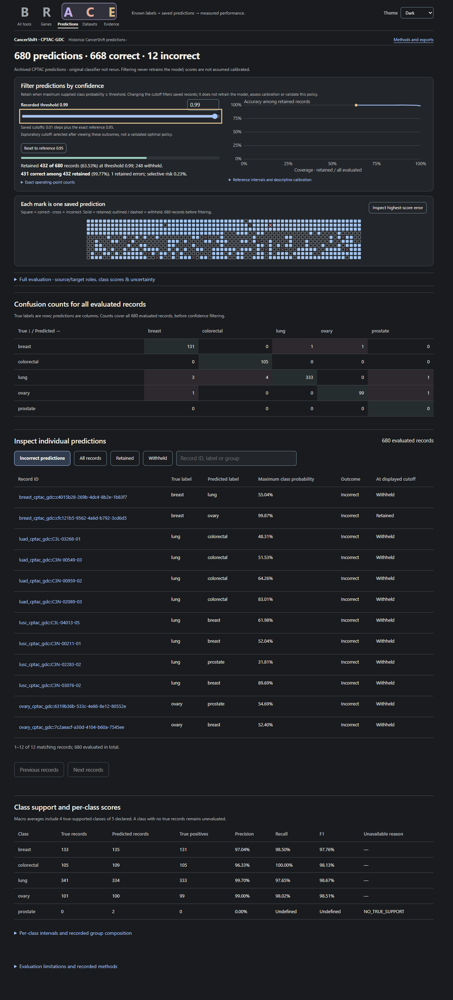
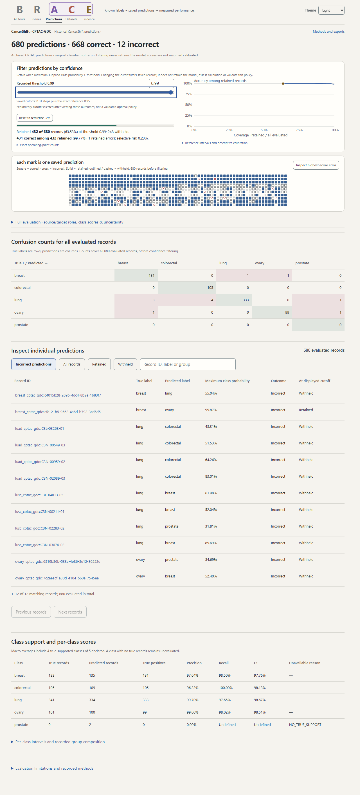
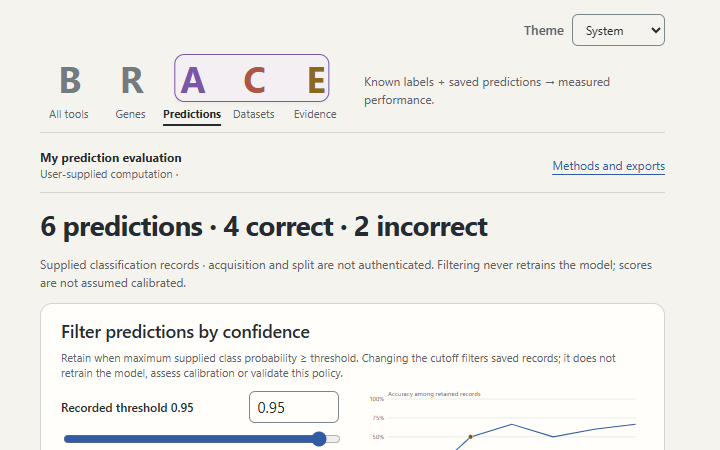
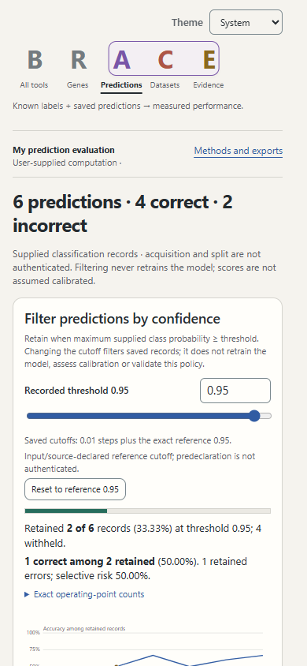

Native200 files use actual browser page zoom; files called200pct_equivalent are the separate viewport-reflow check. Long results scroll. Earlier broad screenshots precede final copy/layout refinements and the final paired-effect SVG-axis repair; matched pairs above are the standard final views.



